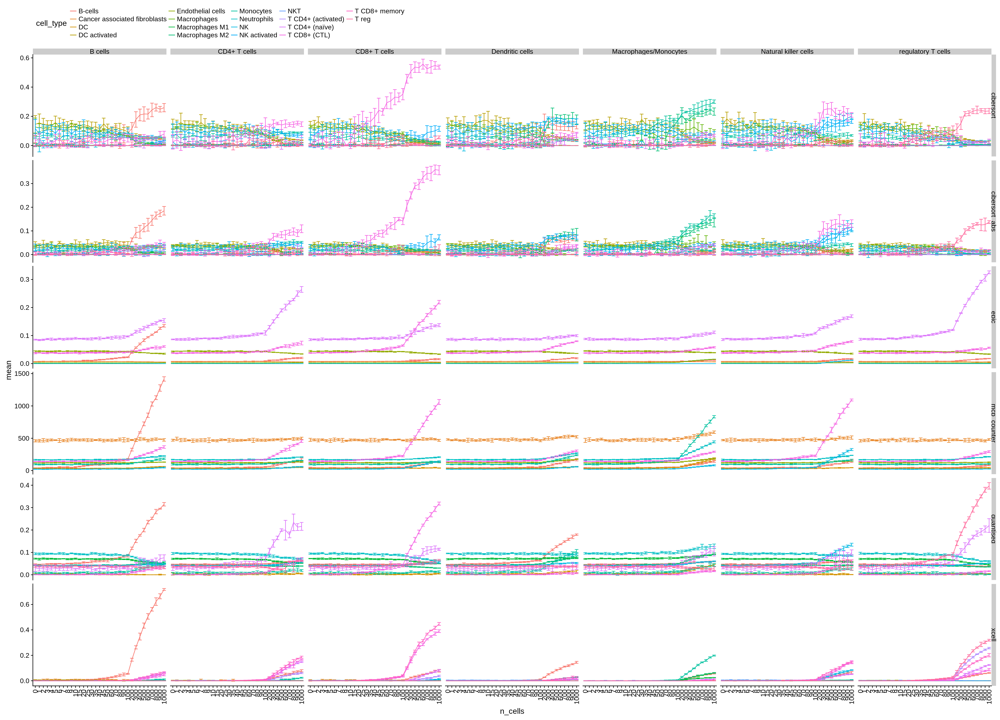

3 Validitiy of single cell RNA-seq as reference
3.1 Validity of single cell sequencing for counting immune cells
- Schelker et al have shown that measurements from single cell sequencing are highly consistent with flow cytometry.
3.2 Validity of simulated bulk tissues from single cell sequencing data
We use simulated samples from single cell gene expression data. Does this approach make sense after all? We have 3 samples of single cell samples matched to bulk RNA sequencing.
To test, we try: * correlation of the simulated gene expression with the measured bulk gene expression. * correlation of the predicted fractions with all methods on bulk vs. simulated tissue.
ovarian_bulk_replicates = read_xls("../data/single_cell_schelker/ascites_bulk_samples.xls")
samples = list("7873M"=c("ascites_7873_1", "ascites_7873_2"),
"7882M"=c("ascites_7882_1", "ascites_7882_2"),
"7892M"=c("ascites_7892_1", "ascites_7892_2"))
ovarian_bulk = lapply(samples, function(cols) {
apply(ovarian_bulk_replicates[,cols], 1, mean)
}) %>% bind_cols()
ovarian_bulk %<>%
mutate(gene_symbol = ovarian_bulk_replicates$Row)
ovarian_bulk_mat = ovarian_bulk %>%
as.data.frame() %>%
column_to_rownames("gene_symbol") %>%
as.matrix()Load the ‘ground truth’
true_cell_count = pData(single_cell_schelker2) %>%
filter(source == "ascites", donor %in% colnames(ovarian_bulk)) %>%
group_by(donor, cell_type) %>%
count() %>%
rename(cell_count=n) %>%
group_by(donor) %>%
mutate(true_fraction=cell_count/sum(cell_count)) %>%
arrange(cell_type, donor)
total_cells = true_cell_count %>%
group_by(donor) %>%
summarise(sum(cell_count))
total_cells## # A tibble: 3 x 2
## donor `sum(cell_count)`
## <chr> <int>
## 1 7873M 864
## 2 7882M 902
## 3 7892M 773true_cell_count## # A tibble: 25 x 4
## # Groups: donor [3]
## donor cell_type cell_count true_fraction
## <chr> <chr> <int> <dbl>
## 1 7873M B cells 5 0.00579
## 2 7882M B cells 4 0.00443
## 3 7892M B cells 5 0.00647
## 4 7873M Cancer associated fibroblasts 9 0.0104
## 5 7882M Cancer associated fibroblasts 11 0.0122
## 6 7892M Cancer associated fibroblasts 16 0.0207
## 7 7873M CD4+ T cells 29 0.0336
## 8 7882M CD4+ T cells 137 0.152
## 9 7892M CD4+ T cells 100 0.129
## 10 7873M CD8+ T cells 4 0.00463
## # ... with 15 more rows3.2.1 Compare simululated samplese to bulk samples
randomized:
cell_fractions = true_cell_count %>%
select(donor, cell_type, true_fraction) %>%
complete(donor, cell_type=available_cell_types) %>%
mutate(true_fraction=ifelse(is.na(true_fraction), 0, true_fraction)) %>%
spread(cell_type, true_fraction) %>%
as.data.frame() %>%
column_to_rownames("donor")
bulk_eset_rand = make_bulk_eset(eset=single_cell_schelker2, cell_fractions = cell_fractions, n_cells=500)
bulk_rand = eset_to_matrix(bulk_eset_rand, column = "gene_symbol")
colnames(bulk_rand) = names(samples)summing up all cells:
bulk_sum = sapply(names(samples), function(donor) {
ind = pData(single_cell_schelker2)$donor == donor
# apply(exprs(single_cell_schelker2)[,ind], 1, function(x){quantile(x, c(.98))})
apply(exprs(single_cell_schelker2)[,ind], 1, sum)
})genes = intersect(rownames(bulk_sum), ovarian_bulk$gene_symbol)
expr_all = bind_rows(
ovarian_bulk %>% mutate(source="bulk"),
bulk_rand %>% as_tibble(rownames="gene_symbol") %>% mutate(source="rand"),
bulk_sum %>% as_tibble(rownames="gene_symbol") %>% mutate(source="sum")
) %>%
filter(gene_symbol %in% genes) %>%
gather(sample, tpm, -gene_symbol, -source) %>%
spread(source, tpm)expr_all %>%
mutate(bulk=log2(bulk+1), sum=log2(sum+1)) %>%
ggplot(aes(x=bulk, y=sum)) + geom_point() + stat_cor() + facet_wrap(~sample) +
geom_abline(slope=1, intercept = 0, col="red")
3.2.2 Compare the predicted fractions
all_results_bulk = lapply(immunedeconv::deconvolution_methods, function(method) {
deconvolute(ovarian_bulk_mat, method) %>%
mutate(method=method) %>%
mutate(source="bulk")
})## Warning in EPIC::EPIC(bulk = gene_expression_matrix, ...): mRNA_cell value
## unknown for some cell types: CAFs, Endothelial - using the default value of
## 0.4 for these but this might bias the true cell proportions from all cell
## types.##
## Running quanTIseq deconvolution module## Gene expression normalization and re-annotation (arrays: FALSE)## Removing 17 noisy genes## Signature genes found in data set: 152/153 (99.35%)## Mixture deconvolution (method: lsei)## Deconvolution sucessful!## [1] "Num. of genes: 10781"
## Estimating ssGSEA scores for 489 gene sets.
##
|
| | 0%Using parallel with 4 cores
##
|
|====================== | 33%
|
|=========================================== | 67%
|
|=================================================================| 100%all_results_simulated = lapply(immunedeconv::deconvolution_methods, function(method) {
deconvolute(bulk_sum, method) %>%
mutate(method=method) %>%
mutate(source="sum")
})## Warning in EPIC::EPIC(bulk = gene_expression_matrix, ...): mRNA_cell value
## unknown for some cell types: CAFs, Endothelial - using the default value of
## 0.4 for these but this might bias the true cell proportions from all cell
## types.##
## Running quanTIseq deconvolution module## Gene expression normalization and re-annotation (arrays: FALSE)## Removing 17 noisy genes## Signature genes found in data set: 140/153 (91.5%)## Mixture deconvolution (method: lsei)## Deconvolution sucessful!## [1] "Num. of genes: 10462"## Warning in .local(expr, gset.idx.list, ...): 1genes with constant
## expression values throuhgout the samples.## Estimating ssGSEA scores for 489 gene sets.
##
|
| | 0%Using parallel with 4 cores
##
|
|====================== | 33%
|
|=========================================== | 67%
|
|=================================================================| 100%all_results = bind_rows(all_results_bulk, all_results_simulated) %>%
gather(donor, fraction, -cell_type, -source, -method) %>%
spread(source, fraction)all_results %>%
ggplot(aes(x = bulk, y=sum)) +
geom_point(aes(colour=cell_type)) +
facet_wrap(~method, scales="free") +
stat_cor()